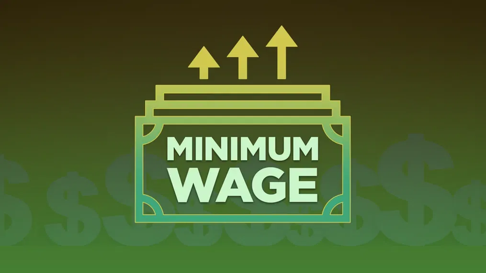

This section showcases a collection of
academic projects completed during my
time at the American University of
Beirut (AUB) and the Rafik Hariri
University (RHU). These projects span
various disciplines, reflecting my
academic growth and technical expertise.
Additionally, one project was developed
as part of an internship, providing me
with valuable hands-on industry
experience and further enhancing my
practical skills.
CoCoT is an AI-driven project that transforms education by offering personalized Python
programming support. Built on the Llama 3 model, CoCoT was fine-tuned using a curated dataset
of Python code snippets, explanations, and educational prompts. This fine-tuning enables CoCoT to
deliver tailored, interactive learning experiences, making programming education more accessible and
engaging.
This project applied machine learning to optimize Cost Per Lead (CPL) for Nuun Digital. Various models,
including linear regression, decision trees, and neural networks, were evaluated, with the neural network
proving most effective. A Power BI dashboard was developed to track marketing KPIs, offering detailed insights
into campaign performance and financial metrics.

Conducted an in-depth analysis of the correlation between liver cancer prevalence and alcohol use disorder
(AUD) in Cyprus using Python. The project involved data cleaning, statistical analysis, and visualizations
to uncover key insights. Additionally, I developed an interactive Streamlit dashboard to present the findings,
allowing users to explore the relationship between these factors and gain a deeper understanding of the public
health implications.

Utilized data analysis and visualization techniques to explore the correlation between policy interventions
and food security outcomes. The project involved examining various data points and uncovering patterns to provide
actionable insights. I also created an interactive Tableau dashboard, allowing stakeholders to visually explore the
relationship between policies and food security, ultimately aiding in data-driven decision-making.

Participated in a confidential project between Baker Tilly and the Ministry of Health of Cyprus in October
2023 as one of four student interns. My primary focus was on data analysis and projections related to the
demand for and supply of healthcare services in Cyprus for the 2023-2028 period. Although the project was
confidential, the results were later published in an article, highlighting key insights and trends to support
strategic decision-making for future healthcare planning.

Developed a system for segmenting and classifying brain tumors in MRI images using deep learning models.
The system allows users to upload MRI scans, identify and segment tumors, and classify them into one of
four types: Glioma, Meningioma, Pituitary, or no tumor. If no tumor is found, the system provides a reassuring
message. It generates professional PDF reports with patient details and findings. The project uses a U-net model
for segmentation and a CNN for classification, trained on a Kaggle dataset of 3000 images, enhanced by data
augmentation techniques. The solution is integrated with a PyQt5 interface for user interaction.